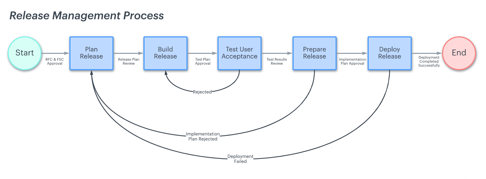

Sürüm Yönetimi
Sürüm Yönetimi Nedir?
Sürüm yönetimi, geliştirme ve testten dağıtıma kadar bir yazılım sürümünde yer alan tüm aşamaları denetler. Yeni bir ürün veya mevcut bir üründe değişiklik talep edildiğinde her zaman sürüm yönetimi gereklidir. Sürüm yönetimi süreçleri farklılık gösterebilir ve her kuruluş için özelleştirilebilir olsa da, sürüm yönetimi için beş temel adım vardır:
- Plan release
- Build release
- User acceptance testing
- Prepare release
- Deploy release
1. Plan Release
Planlama aşaması, tüm sürümünüzün baştan sona yapılandırıldığı yer olduğu için en çok zaman alan aşama olabilir. Sağlam bir sürüm planı, ekibinizin doğru yolda kalmasına ve standartların ve gereksinimlerin uygun şekilde karşılandığından emin olmasına yardımcı olacaktır. Bir sürüm planına yaklaşmanın birkaç yolu vardır. En popüler sürüm yönetimi yöntemlerinden biri yazılım geliştirme yaşam döngüsüdür.(Software Development Life Cycle, SDLC)
Planınızı planlamanın ve süreci netleştirmenin bir yolu sürüm yönetimi kontrol listesidir. Kontrol listesi, süreç fonksiyonlarını ve sorumluluklarını kabaca kronolojik sırada özetlemelidir. Ekibiniz kontrol listesine baktığında, hangi adımda olduklarını ve rollerinin veya sorumluluklarının ne olduğunu hızlı bir şekilde belirleyebilmelidirler. Planınız taslak haline getirildikten sonra, gözden geçirmeleri için tüm ilgili paydaşlara (ekibiniz, ürün yöneticiniz ve üst düzey liderler) sunun. Gereksinimlerde veya kapsamda gördükleri herhangi bir boşluk veya sorunla ilgili geri bildirimlerini alın. Plan onaylanıp kesinleştikten sonra uygulamaya koyabilirsiniz.
2. Build Release
Yayın planı kesinleştikten sonra, yayın için ürünü tasarlamaya ve oluşturmaya başlayabilirsiniz. Bu, sürüm planında ana hatlarıyla belirtilen gereksinimlere dayalı olarak ürünün gerçek "geliştirilmesidir". Bu birkaç yineleme gerektirebilir. Ekip ürünü geliştirirken, kullanıcı kabulü için (genellikle otomatik olarak) bir test ortamına gönderilir. Bu, ekibin gerçek dünya ortamında ortaya çıkabilecek hataları veya sorunları belirlemesine olanak tanır.
3. User acceptance testing
Kullanıcı kabul testi (UAT), son kullanıcıların ürünü gerçekten kullanmaya ve geri bildirimde bulunmaya başladığı noktadır. Bu genellikle çevrimiçi olarak ücretsiz bir beta denemesi olarak yapılır veya şirket içindeki daha büyük bir çalışan grubuyla paylaşılır. Hatalar tespit edildiğinde, ekip sorunları düzeltmek ve daha fazla bütünlük için yapıyı yeniden tasarlamak için çizim tahtasına geri döner. Yapının UAT aşamasını geçmesi gereklidir.
4. Prepare release
Bu adım, UAT'de öğrenilen her şeyi dikkate alarak ürüne son rötuşları yapmaktır. UAT ve kalite güvencesi, ürün piyasaya sürüldükten sonra meydana gelebilecek herhangi bir sorunu daha iyi tahmin edebilmesi ve önleyebilmesi için en yaygın hataları ortadan kaldırır. İnceleme tamamlandıktan sonra, işlevsel ekip bulguları doğrulayacak ve dağıtım için sürümü sonlandıracaktır. Derlemenin canlı bir ortama dağıtılabilmesi için önce ürün sahibi tarafından onaylanması gerekir.
5. Deploy release
Sürümdeki değişiklikler ve yeni özelliklerin nasıl çalıştırılacağı konusunda kullanıcılar bilgilendirilmelidir. Dağıtım aşamasında geliştirme ekibi, sürümün performansını değerlendirmek ve dağıtımın nasıl gittiğini tartışmak için bir araya gelmelidir. Devam eden sorunlar varsa, bunlar belirlenmeli ve ekibin bir sonraki yinelemede ele alması için belgelendirilmelidir.
Sürüm Numaraları
Yazılım sürüm belirleme, bilgisayar yazılımının benzersiz durumlarına benzersiz sürüm adları veya benzersiz sürüm numaraları atama işlemidir. Belirli bir sürüm numarası kategorisinde (büyük, küçük), bu numaralar genellikle artan sırada atanır ve yazılımdaki yeni gelişmelere karşılık gelir. Ayrıntılı bir düzeyde, revizyon kontrolü genellikle, bu bilgi bilgisayar yazılımı olsun ya da olmasın, bilginin aşamalı olarak farklı sürümlerini takip etmek için kullanılır. Örnek bir sürüm numaralandırma şekli;
(Major version).(Minor version).(Revision number).(Build number)
Aşağıdaki gibi versiyon numaralarını sıkça görmüşüzdür:
- 7.0.6000.16386
- 8.1.0178.00
- 11.11
- 2.7.0.0
- 2.5.10 / build 6903
- 2.0 build 0930
- 0122.1848.2579.33475
- 2 .0.50727.312
- 2.0.0.1
- 1.8.20061.20418
Bu ifadeler son kullanıcı için hiçbir şey ifade etmiyor. Hatta kafa karıştırıcı oluyor. Bu nedenle artık çoğu yazılım sadece ana versiyon numarasını kullanıyor. Firefox 2, Office 2003, Office 2007, Visual Studio 2010 gibi. Sade bir yöntemle ifade etmek için aşağıdaki şekilde sürüm numaralandırma işlemi yapabiliriz;
(Major version).(Minor version).(Bug)
Süreç
Sıfırdan bir projeye başladınız. Hedef ilk kararlı sürüm olacak olan 1.0.0 versiyonuna ulaşmak. Burada alfa, beta süreçlerine girmemize gerek yok. Öncelikle 1.0.0 versiyonu için gereksinimler yani yazılımın hangi özellikleri ihtiva etmesi gerektiği belirlenir. "Yazılımın ilk sürümü şunları ve şunları yapabilmeli" gibi bir karar almamız gerekiyor. Daha sonra eklenen her özellik için ortadaki numara, her düzeltme için sondaki numara artırılır. Bir numara artırıldığında sağında kalan numaralar sıfırlanır. Örnek süreç:
- 0.1.0 ilk özelliği ekledik.
- 0.1.1 bir düzeltme yaptık
- 0.1.2 bir düzeltme daha (bug fix)
- 0.2.0 yeni bir özellik ekledik
- ..
- 0.3.0 yeni bir özellik ekledik.
- ..
- 1.0.0 Hedeflenen ilk sürüme ulaştık.
Bu aşamadan sonra 2.0 için neler istediğimizi belirlemeliyiz. Aynı süreç baştan devam edecek.